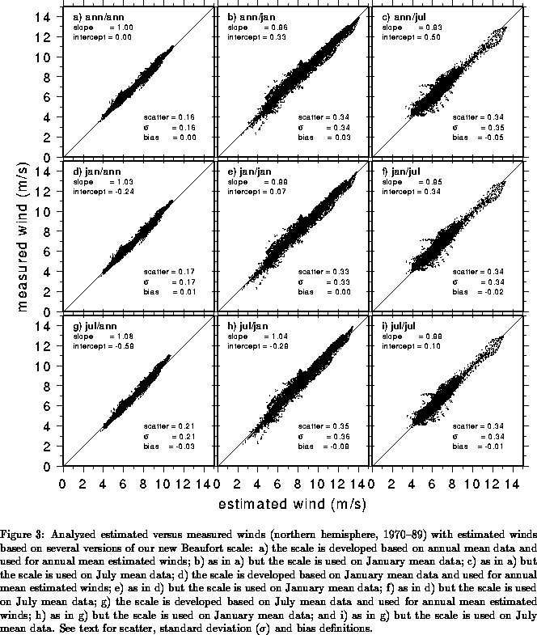

The main objective of this section
is to devise a correction to the Code 1100 Beaufort
equivalent scale that would bring not only average measured/estimated
wind speed in closer agreement, but also produce consistent
mean estimates of nonlinear quantities
such as the average pseudo wind stress
(). It would seem that a simple linear regression formula
would bring measured/estimated wind speeds in Fig. 2a in close
agreement, as discussed in the previous section.
In the above formula
and
stand for the corrected and old WMO
Code 1100 wind speed, respectively, and
,
constants to be determined.
However,
consistency between measured/estimated average pseudo wind stress
requires not only the mean speeds to be consistent
(
), but also a consistency of standard deviations
(
). Such consistency
of standard deviations cannot be accomplished with a simple linear
regression. As mentioned earlier, a correction
to the old WMO
scale should increase low wind speeds and decrease high wind speeds.
After much experimentation it was determined that such correction can
be accomplished by a function of the form
All of the three alternative Beaufort equivalent scales of the last section
can accurately be
expressed in the form of eq. (5). The constants ,
are determined by means of a least squares fit.
Figure 3 shows the results of these computations based on northern
hemisphere data, base years 1970-89. Each ``row'' in this diagram
corresponds to a different set of constants /
, and each
``column'' corresponds to test data for a particular period (annual,
January or July). For example, the diagonal depicts estimated vs.
measured wind speeds with the corrected Beaufort equivalent scale
developed for that particular month.

It is clear from Figs. 3a,d,g that any of the new Beaufort equivalent scales performs better on climatological annual winds than the CMM-IV scale (Fig. 2b), the ``best'' among the current scales. The new January scale (middle row) performs nearly as well on annual data as the optimal annual scale, with standard errors equal to 0.17 and 0.16 m/s, respectively (compare Figs. 3d and 3a). A close examination of Fig. 3 reveals that on January/July data the January scale is slightly more accurate than the annual scale. The July scale only outperforms the annual/January scales on the July data, but marginally so. The seasonal dependence of the scales is modest and does not warrant the use of a different scale for each month. Based on this analysis, and additional plots for other oceans, we selected the January scale as our primary scale. In this case eq. (5) reads:
Notice that when this equation is applied to climatological winds
the second term on
the right hand side (RHS) should be the average of ,
(
) rather than the square-root of the average
wind, (
).
The wind speed correction given in eq. (6) can be used to derive a revised Beaufort equivalent scale for use in COADS. In Table 5 the mean equivalent wind speed and respective interval of wind speeds for the WMO Code 1100 scale have been mapped using eq. (6) to produce a new corrected scale. Figure 1 depicts the difference between this corrected scale and the other Beaufort equivalent scales. Consistent with the other scales, the UWM scale indicates that the old WMO Code 1100 scale underestimates low wind speeds and overestimates high wind speeds. However, the magnitude of the correction is generally smaller than previous alternatives to the old WMO scale.